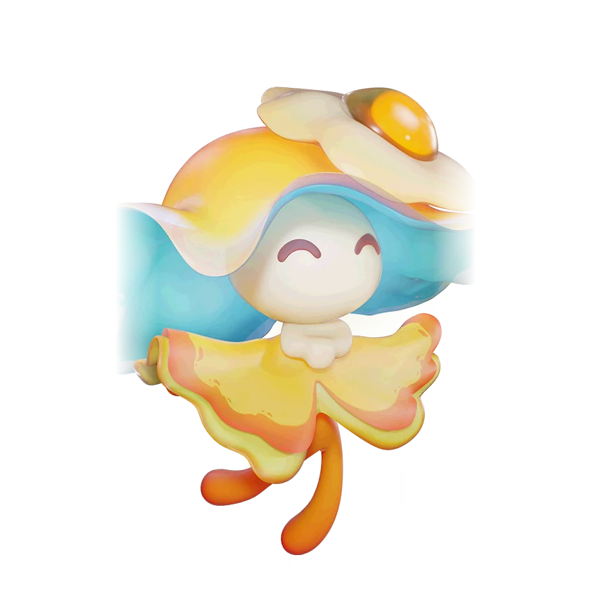

รายชื่อ Aniimo › #078

กระพรุนโคมลอย (Veilfloat)
#078ธาตุสายฟ้าGammaSupportTier D
สิ่งมีชีวิตที่ต้องพึ่งพาแสง มันจะเรืองแสงเมื่อยามค่ำคืนมาเยือน และจะเรืองแสงอยู่แม้ในขณะหลับ
ดูรายละเอียดเต็ม ร่างพิเศษ และร่างเปล่งประกายค่าสถานะพื้นฐาน
| HP | 99 |
|---|---|
| ATK | 93 |
| P.DEF | 72 |
| M.DEF | 74 |
| REGEN | 90 |
| BREAK | 45 |
สกิล
| โจมตีปกติ | ATK สายฟ้า ใช้พลังสายฟ้าโจมตีเป้าหมายจากระยะไกล |
| สกิล 1 | Swift Retreat สายฟ้า ถอนกำลังด่วนโดยการทิ้งร่างโคลนแมงกะพรุนที่จะปลดปล่อยสายฟ้าเพื่อโจมตีเป้าหมายและทำให้เป้าหมายช้าลง 15% เป็นเวลา 10 วิ. |
| สกิล 2 | Lightning Discharge สายฟ้า ยิงลำแสงพลังงาน กดปุ่มสกิลค้างเพื่อยิงต่อเนื่อง ทำดาเมจใส่เป้าหมายในระยะและรักษาเพื่อนร่วมทีมประเภทธาตุสายฟ้าในระยะได้เท่ากับ 2.5% ของ HP ต่อวินาที |
สายวิวัฒนาการ
- หลอดไฟจิ๋ว → กระพรุนโคมลอย (แอนีโมเลเวล 42)
- กระพรุนโคมลอย → กระพรุนแสงละมุน (แอนีโมเลเวล 52, เอาชนะกระพรุนแสงละมุนอัลฟา)
จุดเกิด
- Tideblossom Coast Lv. 53–60
Held Item ที่แนะนำ
- Spirited Feather แอนีโมที่ติดตั้งจะได้รับพลังฟื้นฟูเพิ่ม 0.7 หน่วยต่อเลเวล
- Auspicious Bell เมื่อใช้สกิล มีโอกาส 20% ที่จะได้รับ 5 EP
งานใน Homeland
งานธาตุสายฟ้า Lv.2, งานช่าง Lv.2